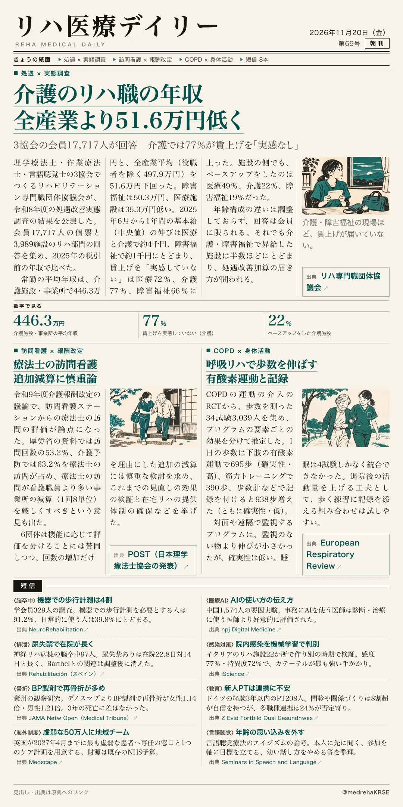
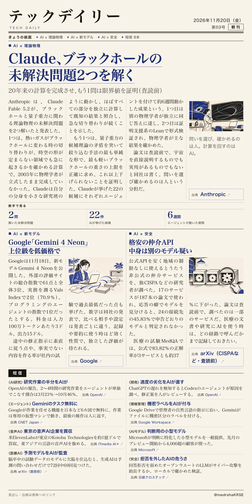

リハ医療デイリー
介護のリハ職の年収 全産業より51.6万円低く
3協会の会員17,717人が回答 介護では77％が賃上げを「実感なし」

テックデイリー
Claude、ブラックホールの未解決問題2つを解く
20年来の計算を完成させ、もう1問は限界値を証明（査読前）

3協会の会員17,717人が回答 介護では77％が賃上げを「実感なし」

20年来の計算を完成させ、もう1問は限界値を証明（査読前）
